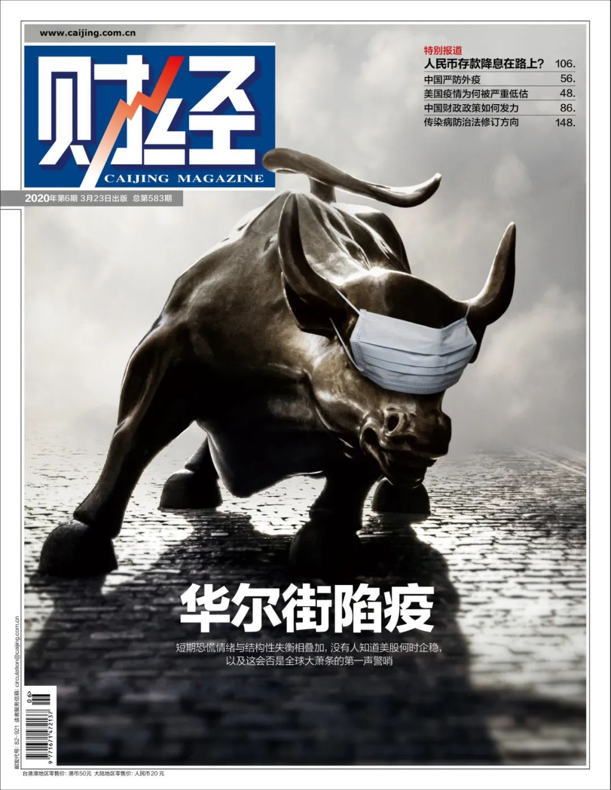
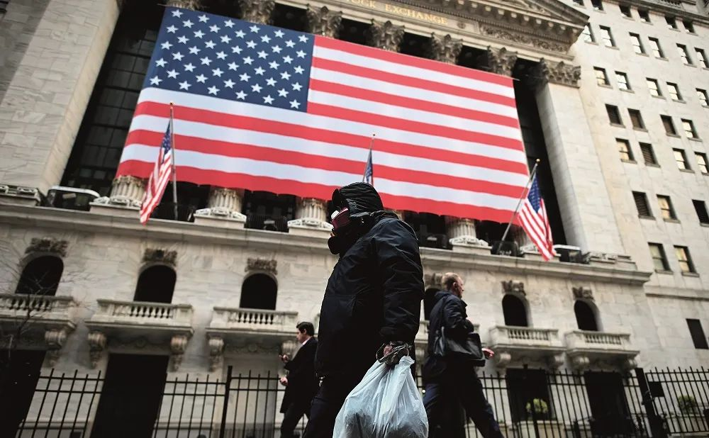
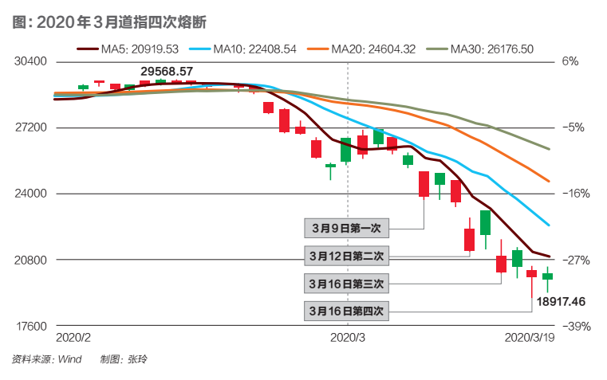

全球股市结束“黑色一周”，世卫将疫情风险调至最高级
原文链接 备份链接 美联储2月28日市场交易结束时进行了救援，发出强烈信号会尽快降息。这会使金融市场至少平静几天。市场随后反弹还是继续下滑，取决于美国及全球新冠肺炎疫情的走势 文 |《财经》特派记者 金焱 发自华盛顿 编辑 | 苏琦 世 …

3月22日早六点，国际市场开盘即现“暴动”。美股指期货跌超5%，触及下跌熔断限制，道指期货低开近千点。短期恐慌情绪与结构性失衡相叠加，没有人知道美股何时企稳，以及这会否是全球大萧条的第一声警哨

封面设计/黎立
文 |《财经》特派记者 金焱 发自华盛顿
编辑 | 苏琦
十年轮回。
2009年3月。美国加州两个儿童出现流感症状，美国疾控中心CDC开始追踪两个案例的感染源，发现均未有家畜接触史，怀疑这种病毒已经在人与人之间传播，这就是2009年被世卫组织定义为全球性大流行病的H1N1流感，三个月左右的时间导致全球近2万人死亡。
十一年后，2020年3月，美国加州因新冠肺炎疫情而全州进入紧急状态，3月4日上午加州出现了首个死亡病例。截至3月20日下午，美国30个州和华盛顿特区宣布进入紧急状态，美国49个州和华盛顿特区共有18563例确诊病例，累计死亡病例227例。
在美国首次确诊H1N1流感病例之前不久，美国道琼斯工业平均指数在2009年3月9日触及6440点，创下21世纪以来该指数的最低点位。之后美股从最低谷起步，历经欧洲主权债务危机、英国脱欧谈判和中美贸易战等黑天鹅事件，一路攀升。
从2009年3月9日到2020年2月市场的最高点，代表美股风向标的道琼斯工业指数、标普500指数和纳斯达克指数分别上涨了359.13％、408.93％和677.36％。其中道琼斯工业指数从6440.08点上涨到29568.57点，标普500指数从666.79点上涨到3393.52点，纳斯达克指数从1265.62点上涨到9838.37点。过去近11年的时间，上述三大股指的年化增长率分别达到了14.94％、16％和20.57％。换句话说，若投资者在2009年市场底部时购买了上述三个指数的ETF基金，其年化收益率为15％-20％，这无论是横向与其他国家股市对比，还是纵向与美国历史上的其他时期对比，这样的收益率都拨得头筹。
2019年中，人们回望2009年的底部——市场从高位跌幅超过50％的拦腰折断时，兴奋地说，十年后的美国股市到了一个“高不可攀”的位置。股指创下历史新高，十年涨幅达到322％。
2019年底，人们回顾美国股市当年的业绩时总结说：美股飙升、屡创历史新高。截至2019年11月30日，标普500指数上涨了28％，市盈率接近18倍，比其15年平均水平高出约24％。
虽然市场上从来没有一种声音，但进入2020年后，美国三大股指继续屡创新高，分析师之间彼此辩论的内容最多是：市场到底是被高估了？还是被极端高估了？这个辩论一直持续到2020年2月之前。全球市场在1月份的短暂冲高之后，开始分化。
先是美股一路狂奔向上的路上在1月27日遇到第一个小坎——美股三大指数大幅收跌。道指跌逾450点，跌幅为1.57％，纳指跌1.89％，标普500指数跌1.57％，其中道指遭受了自2019年10月以来的最大单日跌幅。但它并没有影响美股在2月中旬创出新高。
2月中旬后，全球股市在疫情扩散和油价大跌的影响下出现暴跌，多次触发熔断，同时引发跨资产的大幅波动。以2020年1月1日为起点到3月12日收盘，欧美股市跌幅普遍超过20％，进入技术分析意义上的技术性熊市。
金融市场大起大落，新冠肺炎疫情快速蔓延。世界卫生组织3月18日说，全球新冠肺炎确诊病例累计已超过20万例。该组织收到各个国家和地区报告的新冠肺炎确诊病例总数已超过20万例，死亡病例总数超过8000例。确诊病例中80％来自西太平洋地区和欧洲地区。
2020年春天的华尔街遭遇的是否是一场危机？现在回答这个问题还太仓促，但是华尔街短暂急促的失重，在一个月的时间内从2月19日的高点摔入熊市，暴露了疫情这个前所未有的挑战。瘟疫大流行的历史提供的前车之鉴是：股市崩溃和经济危机相伴相随。此次疫情的公共危机引起金融市场波动加剧，除欧元和日元外的几乎所有货币兑美元比值的大幅下滑。一切仅仅是开始，更大的危机还在酝酿之中。公共卫生危机正在拖累中国、美国等主要经济体，经济衰退短期不可避免。如今很多的未知都始自疫情持续的时间，在某种程度上，人类的命运在病毒手里。
做空者的敏锐与煎熬

2020年 3月17日，交易员在美国纽约证券交易所工作。图/ 法新
电影《大空头》对“慧眼独具”的做空者，有特别传神的群像描写。在2008年次贷危机中，市场狂欢时他们的做空不断亏损，面临老板咒骂，客户撤资，同僚讥笑，自我怀疑。做空者苦等崩盘甚至长达两年之久，承受巨大压力。
新加坡对冲基金QQQ（QQQ Capital Fund）资本创始合伙人王洲对《财经》记者回顾自己做空的心路历程，庆幸它只有一个月左右的时间。
2019年12月的圣诞节到2020年3月初，身为国际运输枢纽、作为开放经济体同世界各地紧密相联的新加坡和香港两地，都报出了奇怪肺炎的疑似病例，这引起了QQQ团队的关注——他们对非典记忆犹新，也深知非典疫情对经济的打击——他们评估，疫情可能是2020年的第一只黑天鹅。
他们开始调整仓位，在1月初做多和疫情不相关、可能会在疫情中受益的股票，布局在线教育和线上平台等。而那时的美股投资者们都还在狂欢的氛围中，市场则表现强劲，从投资者、对冲基金到媒体，极少有对疫情的关注。王洲记得美股直线拉升，持续创出历史新高。
美股在2020年的首个交易日就开门红，标普500指数收盘上涨0.84％，再度刷新历史新高。成分股中约六成收涨，四成收跌。年初那段时间，随着中美签署第一阶段经贸协议，在最初两周多的时间内，美国三大股指迭创历史新高，QQQ因为做空而流血。
美国股市延续了经典的“圣诞涨势”。2019年四季度标普500指数累计上涨8.8％，创下一季度以来最强劲的单季表现，当时该指数上涨了13％。美国市场相信眼前一曙光：国际紧张形势可能得到缓和；美联储不太可能会在2020年加息；美国消费者支出保持强劲，2020年美国经济陷入衰退的可能性很小。
王洲不确定自己是否犯了代价昂贵的错误，还是需要有更多的耐心。春节，他回到海南过新年，微信和中文媒体上传递着恐慌的情绪，而曾经人们摩肩接踵的街道变得空空如也，忙忙碌碌的商场空空荡荡，大量关张的饭店让他更为确信自己的判断，并把坚决做空的信息发给团队——到中国需要5小时航班的新加坡，那时并未被疫情惊动，和中国跨洋的美国，也只对疫情耸耸肩。
1月20日是一个转折点。那天中国国家卫健委发布公告，新型冠状病毒感染的肺炎纳入法定乙类传染病，按甲类管理，并就肺炎情况每日进行通报。美股1月20日因“马丁·路德·金纪念日”而休市一天。1月21日中国决定全面抗疫——国际油价在那一天起开始了新一轮的下跌，中国抗疫导致的需求放缓，严格的隔离措施影响了石油消费。
实际上美股的第一轮下跌通道在1月21已经悄然打开，当天，美国疾病预防与控制中心(CDC)公布了美国境内第一例新型冠状病毒感染的肺炎病例。1月24日CDC在电话简报中说，美国在22个州共有63例疑似病例。新冠肺炎疫情对全球金融市场走势形成打压的第一次突出表现是三天后的1月27日。当天早间，道指一度下跌逾540点，衡量市场恐慌程度的CBOE波动率指数（VIX）大涨近42％，攀升至18.42点。美国两年期、五年期国债出现倒挂，为2019年12月4日以来首次。
王洲在新加坡看到美股三大指数当天收跌。截至收盘，道指跌逾450点，跌幅为1.57％，纳指跌1.89％，标普500指数跌1.57％，其中道指遭受了自2019年10月以来的最大单日跌幅。这让王洲有些失望。在美国股市去年拿到史上最好的回报率后，美股自满的情绪一发而不可收。尽管那时航空业、旅游业及其他与旅游业相关的酒店行业、邮轮已经受到打击，全球产业链也受到破坏，但市场仅仅小跌了一下。
在美国，金融服务公司B. Riley FBR Inc.首席全球策略师兼董事总经理马克·格兰特（Mark J. Grant）也紧盯着市场的起伏。他对《财经》记者表示，“股市1月24日如此下跌，表明投资者非常担忧。”但他随后话锋一转，说出了当时代表华尔街投资人的心态：现在具体评估该病毒对全球经济活动或全球金融市场的影响还为时过早，判断美国股市是否迎来拐点也为时尚早。
王洲所在的对冲基金QQQ那时对美股则更为看空，在1月底增加了对航空公司和酒店的空头押注，做空与旅游出行相关的股票，以及没有高成长性的汽车股，并做空标普500指数，以押注新冠肺炎疫情会恶化。在王洲看来，疫情升级要对冲风险。如果疫情大范围暴发，供应链受到很大冲击。美国很多企业不仅依赖中国的市场，对中国的供应链依赖也很大。
2020年1月份，美股市场以上涨约1.2％收尾。
大数据时代的恐慌指数
深数宏观采用新颖的大数据方式判断疫情带来的情绪和它对市场的影响。
他们基于路透社新闻头条中对新冠肺炎疫情的语言处理——用语言的恐惧程度为指标，对比了与“冷静/平静”相关单词的数量，与“恐慌/担忧”相关单词的数量，得出对新冠肺炎疫情报道恐惧程度的净得分，负值意味着更恐惧/不大镇定，正值则意味少有恐惧/更镇定。
通过这种更全球而非中国情绪的指标，他们发现“恐惧”情绪在2月1日达到顶峰。尽管在2月9日和2月14日中的净恐惧增加，但这一情绪在那之后明显减少。事实证明，在2月的相当长一段时间，全球的央行和华尔街的投资者都倾向于相信，疫情是中国的关切，是中国经济的威胁。
美联储在提交给美国国会的货币政策报告中表示，最近暴发的新冠肺炎疫情可能会导致中国经济活动受扰，并会殃及全球其他经济体。
2月中旬花旗集团前全球外汇主管、深数宏观（DeepMacro）联合创始人兼CEO杰弗瑞·杨（Jeffrey Young）对《财经》记者表示，他们通过对网站实时追踪，通过大数据来判断疫情对经济的影响，以维基百科访问量为例，人们对“冠状病毒”中文简体维基百科的访问量领先英文版本的访问量。英文版本的信息对全球市场的影响最大，因此可通过观察中文简体版的访问量来预测全球市场的风险状况。所以新冠肺炎那时不是影响全球市场的主要因素。
直到2月的最后一周，美国股市才被新冠肺炎疫情的恐惧所笼罩。杰弗瑞·杨说一个清晰的模式已经确立：新增确诊病例数=增加的市场恐慌=疲弱的资本市场。市场自2月21日起感到了疫情对全球经济的寒意，随着周末的到来，情况越来越糟。
2月21日道琼斯工业平均指数收低227.57点，或0.8％，报28992.41点。这是道指自2月4日以来的首次收盘价，跌破29000点。标普500指数下跌1.1％，至3337.75点，纳斯达克综合指数下跌1.8％，至9576.59点。道指自2月7日以来表现最差，而标普500指数则创自1月31日以来最大的单日跌幅。纳斯达克指数录得自1月27日以来最糟糕的交易日。标普500指数11个板块中有10个板块下跌，1个板块上涨。其中，能源和科技板块领跌，房地产板块上涨。
第二轮下跌通道自2月24日开始。这一天的标志事件是，韩国将疫情预警上调至最高级别，自此疫情开始向全球扩散。伊朗和意大利疫情暴发，恐惧指数急剧恶化，拖累了全球股市。
2月24日周一早间，衡量投资者恐慌程度的芝商所（CBOE）波动率指数（VIX）一度飙升约48％，上涨至23点。美股三大股指全线收跌，道指跌超达1032点，跌3.56％，纳指跌3.71％，标普500指数跌3.35％。A50指数期货盘中跌超1％。
当新型冠状病毒实现了在世界六大洲的蔓延后，终于在2月27日成为影响全球经济走势的主要叙事，美东时间2月27日周四，美股收盘暴跌，三大股指均跌逾4％，其中道指重挫近1200点。截至收盘，道指跌4.42％，或跌1190.95点，纳指跌4.61％，标普500指数跌4.42％。美国三大股指均陷入回调区，较近期高点至少下跌了10％，并创下有史以来最大单日点数跌幅。2月28日中国沪深A股和中国香港股市开盘后，亦出现较大幅度的下跌。
摩根大通一位不具名经济学家对《财经》记者表示，非理性繁荣统治市场的时光不多了。如果从美国股市2月21日遭抛售、纳斯达克指数录得约三周来的最大单日百分比跌幅时起计算，美国股市已经连续三天大跌。下跌的点数创下新的纪录，波动率指数更是飙升了三倍。市场情绪已变，如果还没有完全掉头，至少也到了观望之际。
IMF发言人2月27日表示，因新冠肺炎疫情，IMF可能在下一次全球经济展望中调降全球经济增速预期。
评级机构穆迪公司（Moody’s）旗下穆迪分析首席经济学家马克·赞迪（Mark Zandi）对《财经》记者指出，市场投资者已开始为全球经济衰退定价，至少肆虐的新型冠状病毒会严重影响企业的收益。如果新冠肺炎疫情成为全球性的大流行病，经济衰退就难以避免。在接下来的几周里，股市还会有更多糟糕的日子。
在3月份到来之际，王洲终于等到了回报：对冲基金数据提供商Eureka hedge的数据，随着全球市场下挫，2020年的前两个月他们的基金回报率飙升了77％，而同期亚洲对冲基金平均收益下滑了0.6％。
市场惊醒，暴涨暴跌
美股自2月24日起的下跌通道至今未有转向迹象，与之相伴的是史上前所未见的暴涨暴跌。在过山车的行情下，市场波动率高企。
截至2月底，道指较高点最大跌幅达16.53％，纳指较高点最大跌幅达16.85％，标普指数较高点最大跌幅达12.94％。转眼到3月，3月2日周一美股该月的第一个交易日，三大股指暴涨逾4％。3月3日美联储降息难阻美股暴跌逾2％，3月4日美股三大股指又联袂大涨逾4％。3月5日，美股三大股指均跌逾3％，道指跌近千点。在截至3月6日为止的七个交易日内，标普500指数的每日涨跌幅度均超过4％，刷新了1929年11月创造的连续六日涨跌幅超过4％的前纪录。
在疫情发生前，没多少人预见到金融市场会如此表现，市场一直沾沾自喜。但当疫情开始扩散，一切又变得顺理成章。唯一让人意外的是高收益债券的反应非常缓慢。
最终唤醒市场的是石油价格的暴跌。
由于新冠肺炎疫情继续蔓延，从最初的中国到2月底，日韩两国陷入疫情抗击，几大石油进口大国石油需求陡然减少，抑制了全球原油的需求，叠加全球经济衰退担忧，加剧了市场对需求的长期悲观情绪，国际油价崩跌不止。
为稳定价格，石油输出国组织欧佩克（OPEC）与俄罗斯在3月6日举行谈判，但未能就限产议题达成协议，就减产150万桶/日的谈判不欢而散。3月9日，沙特出人意料打响原油价格战。沙特阿美以近20年来最大折扣，吸引客户购买沙特原油。4月卖往亚洲的原油定价下调4美元－6美元/桶，4月卖往美国的原油定价下调7美元/桶，而卖给西北欧炼油商的旗舰级阿拉伯轻质原油折扣扩大到8美元/桶。沙特方面还表示，如果市场有需要，沙特可将产量达到1200万桶/日的水平。
此举引发了全球能源市场恐慌。3月9日国际油价出现罕见的跌幅，NYMEX原油期货、ICE布油期货盘中一度跌逾30％，NYMEX原油期货一度跌破30美元。美国WTI原油期货一度跌破30美元/桶整数位心理关口，跌幅超30％。截至收盘，美国WTI4月原油期货收跌10.15美元，跌幅24.59％，报31.13美元/桶，创1991年以来最大单日跌幅。
无论沙特打压油价是为警告俄罗斯，还是醉翁之意不在酒，更意在通过迫使页岩油产量下降夺回被美侵占的市场份额——美国页岩气的盈亏线是，开采折合每桶30美元至40美元，位于迪拜的顾问公司Qamar Energy首席执行官罗宾·米尔斯（Robin Mills）对《财经》记者说，油价暴跌将给美国页岩油生产商带来沉重的压力，但如果情况持续下去，中东产油国也会感到不舒服。目前，俄罗斯反而有优势地位。问题在于，由于这个病毒疫情带来的需求太弱，即使油价再低也无济于事。
布油期货从3月5日的50.18美元到到31.02美元，六个交易日跌幅超40％，美国WTI原油期货跌幅超50％，为历史罕见。到北京时间19日凌晨，美油期货跌幅扩大至逾16％，跌破23美元关口，布油期货跌破27美元，跌逾11％，刷新2003年以来新低。
疫情和油价的双重夹击下，道琼斯指数从今年2月12日29568.57点的最高位，跌至3月9日的23706.07点低位，跌幅达16.42％。标普500指数从2月24日至3月13日下跌幅度为20％。
市场开始陷入情绪驱动模式。3月9日三大股指集体大跌逾7％，道指一度跌超2013点，如此巨大的单日跌幅以及从2月下旬以来的持续下跌，令投资者感到危机在真实来临。欧洲主要股指3月9日也全线重挫，截至收盘，欧洲斯托克50指数跌8.26％，英国富时100指数跌7.69％，德国DAX指数跌7.89％，意大利富时MIB指数跌11.17％。金融市场动荡加剧，使芝加哥期权交易所波动率指数（简称为VIX，又称“恐慌指数”）攀升至30上方，为史上罕见。
3月10日美股上演大翻盘，三大股指均涨近5％。3月11日，美股三大股指全线重挫，道指跌近1500点，自今年高点累计回落逾20％。道指下跌1464.84点，跌幅为5.86％，较此前高点跌去20％以上，进入技术性熊市；标普500指数跌幅为4.89％；纳指下跌392.20点，跌幅为4.70％。
恐慌显然没有达到峰值的迹象。澳大利亚、日本、巴西和意大利等国股市在3月跌入熊市后，美国在3月12日加入这一行列，当天美国三大股指收盘均跌入技术性熊市。与此同时，近来美国、泰国、菲律宾、韩国、巴基斯坦、印尼、巴西和加拿大等全球11个国家股市暴跌熔断。3月12日美股的“黑色星期四”，美股三大股指收盘暴跌超过9％。道指收跌逾2300点，跌幅约10％，创1987年10月以来最大单日跌幅。标普500指数跌9.51％，纳指跌9.43％。3月13日，美国多项措施应对疫情等消息刺激下，美股三大股指飙涨逾9％，为金融危机以来最大单日涨幅。
始于大衰退废墟之上的这一轮牛市，自2009年3月见底以来，标普500指数在过去132个月时间里累计上涨了339％。标准普尔道琼斯指数公司（S&；P Dow Jones Indices）的高级指数分析师霍华德-西尔弗布拉特（Howard Silverblatt）对《财经》记者指出，始于2009年3月牛市已经正式结束，熊市已经正式开始。2月19日标普500指数报收于3386点的历史高点。
标普500指数在3月9日至3月13日大跌了8.8％，自2020年初以来已下跌了16.09％，自2月19日的高点更是下跌了19.93％。美股花了19天的时间便步入熊市，速度之快仅次于1931年的经济大萧条。作为对比，1987年股灾，美股用了38天最终确认进入熊市，今年美股步入熊市的速度比当时快1倍。一位不具名的华尔街分析师对《财经》记者指出，2月底到3月中旬市场的修正已完全把此前的乐观情绪转变为极端悲观主义。市场已连续处于超卖状态。
美联储进退失据
自2015年12月启动加息周期，美联储连续加息9次，并开启缩减资产负债表计划，以逐步退出金融危机后出台的超宽松货币政策。北京时间8月1日凌晨，美联储首次宣布降息25个基点，将联邦基金利率目标区间下调至2.00％－2.25％。时隔十年后，由于中美贸易摩擦、金融市场的大幅回调等，促使美联储宣布货币政策逆转，货币政策紧缩周期告一段落，开启新一轮降息周期。
2019年全年，美联储共进行了3次降息，将短期利率降低了75个基点。在相当长一段时间，华尔街倾向于相信，除非如美中贸易战出现大的升级，美联储很可能在可预见的未来不再降息。2020年开局，尽管有美国与伊朗间紧张关系急遽升高之类的外部冲击，美联储对经济状况很有信心，对货币政策的立场也感到满意。
美联储在2月7日的半年度货币政策报告中指出，美联储去年三次降息后，当前的货币政策立场是合适的，能够支持美国经济活动持续扩张、劳动力市场强劲增长且通胀率位于“对称性的2％目标”。
2020年是选举年，自2017年任命鲍威尔为美联储主席以来，特朗普先后在推特上发文数十次，公开表达对鲍威尔的不满。本来鲍威尔只是想在大选年里，能静观其变，保持独立性，平稳地走过这一年。但在2月最后一周美股创下2008年以来最惨跌幅后，鲍威尔在2月28日的声明中暗示，美联储已为下调利率做好准备，旨在缓解潜在公共卫生危机和全球经济放缓扩大对美国经济造成的影响。
美股由此在3月2日全线上涨，道指从连续七个交易日的下跌中反弹，创下十多年来的最大单日涨幅，只因投资者押注各国央行能够稳定市场。在疫情和市场的巨大双重压力下，美联储主席鲍威尔于当地时间3月3日出人意料地举行新闻发布会，宣布降低联邦基金利率50个基点至1％－1.25％，将超额准备金率（IOER）下调50个基点至1.1％，以应对新冠肺炎疫情给经济活动带来的风险。这是自2008年金融危机以来，美国首次采取紧急降息措施，也是自那时起幅度最大的一次降息。
但美联储的举动大大出乎市场预料，因它并不在美联储原定的联邦公开市场委员会（FOMC）全年会议日程中，按照原定计划，3月份的议息会议将在3月17日-18日举行。在美联储如此强势反应下，3月3日美股延续了震荡走势，美三大股指窄幅高开后快速下探，跌幅均超1％，随后在美联储将基准利率下调50个基点消息刺激下直线拉升均涨超1.2％，随即深度下探，其中道指从高位下挫近1400点后小幅反弹，但跌幅仍高达近800点。
在市场人士看来，美联储紧急降息意在回应投资者关切，原本有利于稳定市场预期。但同时，联储采取如此罕见举措，也暗示了目前市场和疫情问题之严重。因此在防疫形势进一步明朗之前，市场恐慌并不会立即消除。
马克·格兰特指出，市场预期到了美联储降息，但未有料到降的幅度一下子就是50个基点，现在如此靠近零利率的水平线，说明美联储的政策空间已经不大了。现在市场需要谨慎，非常谨慎。
在3月9日和12日道琼斯工业指数的下跌都超过了2000点，2月20日至3月12日，道琼斯工业指数、纳斯达克综合指数、标普500指数分别下跌27.76％、26.64％、26.74％后，美联储3月15日周日再次召开紧急会议，宣布降息100个基点，将基准利率降为0－0.25％，标志着在2008年金融危机之后，美国再次进入“零利率”时代。3月3日到15日13天合计降息150个基点，如此密集的降息在经济史上十分罕见，美联储创下了最短时间累计降息幅度最大的纪录。可以参照的是，2008年1月22日到2月1日，美联储11天曾经两次降息合计125个基点。金融危机后，美联储为挽救经济，曾一路降息至0－0.25％的超低水平，此后延续了七年的零利率政策。
除降息之外，美联储还宣布了7000亿美元大规模的量化宽松计划，包括几个月内回购至少5000亿美元国债，增持至少2000亿美元规模的抵押担保证券。这一举动也非同寻常。2008年金融危机后，美联储先后推出至少三轮量化宽松。首轮量化宽松，也就是金融体系最危急的时候，美联储直接购买“两房”债务及其抵押担保证券，此举支持金融机构信用，及时稳定了市场。
对美联储此次出招，杰弗瑞·杨解读为是在寻求宣布效应（announcement effect）——特朗普此前刚宣布美国进入紧急状态，众议院迅速通过了疫情救助法案，加上美联储放大招，在政治经济上强强联合，在病毒面前形成珠联璧合之势。但美联储又一次迫不及待，又一次适得其反——市场把紧急降息看作事态严重的信号，更加剧了投资者的恐慌。
3月16日再度变成“黑色星期一”，全球股市又现连环熔断。3月16日美股触发本月第三次熔断，道琼斯指数创1987年以来最大单日跌幅。同时，巴西、加拿大、埃及等国股市也纷纷出现熔断，股灾已从美国向全球各地蔓延。
随着新冠肺炎疫情引发的公共卫生危机席卷全球，全球股市波动性急剧上升，经济不确定性也在增加。3月16日全球范围内的恐慌性抛售此起彼伏。
欧股当天低开低走，欧洲斯托克50指数期货跌幅扩大至6％。法国CAC40指数跌幅扩大至逾10％，创2013年以来新低。截至北京时间3月16日22时，英国富时100跌7.01％、法国CAC40跌11.25％、德国DAX跌10.28％；恐慌指数VIX期货跌幅23.37％。亚太股市也全面重挫，中国内地A股上证指数跌3.4％，港股恒生指数跌4.03％，澳大利亚暴跌9.7％，菲律宾、印度、泰国跌逾5％，韩国跌逾3％，日本收跌2.46％。
一地鸡毛

标普500指数在3月9日至13日大跌了8.8％，自2020年初以来已下跌了16.09％，自2月19日的高点更是下跌了19.93％。图/ 法新
3月19日，随着全球新冠肺炎病例飙升至20万例，美股再次被恐慌性抛售。当天道指跌1338点，跌幅为6.3％；标普500指数跌131点，跌幅为5.2％；纳斯达克综合指数跌345点，跌幅为4.7％。当天道指一度下跌超过1500点，跌破20000点关口，抹去了自特朗普2017年1月20日上台以来的所有涨幅。
至此，道指已从2月12日历史高点跌掉了32.6％——道指仅用了35天、24个交易日跌去了1万点；标普500和纳斯达克指数从2月19日历史高点分别跌掉了29％和28.9％。而根据知名美股网站GuruFocus计算，自2月19日美股下跌以来，巴菲特的股票投资组合已损失约802亿美元，跌幅为32％。
疫情像野火一样蔓延，央行政策的效果在疫情的火苗下大打折扣。在过去11年的牛市中，人们看到了央行行动带来的强大力量。多位投资基金经理对《财经》记者表示，过去十年的经济增长并不强劲，实际经济增长在2％左右，最终却支撑了这么长的牛市？其实牛市的主要驱动力是美联储的低利率。股市、房地产以及其他投机市场的实际价格受到支撑，形成了资产泡沫，但泡沫终将破裂。
道格·拉姆齐（Doug Ramsey）是Leuthold集团的首席投资官。他经历了1987年的崩盘和科技泡沫破灭。他于2005年加入Leuthold。“这次最令人讨厌的牛市——人们很早就说过。在过去十年的中间阶段，人们会逐渐入市，去年，很多投资者成了信徒（深信美股会继续上涨）。这种信仰来自对美联储的信心。我将整个十年称为类固醇时代，我认为它的上涨主要归功于美联储的支撑。”
达拉斯前联储主席理查德·费舍尔（Richard Fisher）指出，美联储真的想每次市场紧张的时候都马上救市吗？股市从历史高位跌落——美联储出手，似乎成了一个惯常套路，但问题是，美联储真的想一直这样，助长投资者的依赖心理，并把泡沫越吹越大？
疫情是对这一套路最大的挑战者，市场情绪因之出现了从极端贪婪到全面恐慌情绪的转变。过去十年中，一些让美股维系牛市的操作思路变得派不上用场。其中最明显的就是美股“逢低买入”的操作方式。
自上一次熊市以来，标普500指数已经有25次跌幅达到5％或以上，每一次都成为买入机会，其中包括美国信用评级遭下调、贸易战、英国脱欧和日本2011年大地震。在这一轮漫长的牛市当中，“逢低买进”已经被一次又一次证明是一种回报不菲的策略，但投资者发现，这一策略在当下已经不再那么好用，随时可能失灵。
约翰·霍普金斯大学金融经济中心主任巴贝拉（Robert Barbera）表示：“美国经济扩张已经进入第11个年头，过去11年来所有让你害怕的事情，事后看来，都是买入机会。”
在美股再次遭到猛烈抛售，恐慌指数持续攀升，债券等安全资产受到追捧之际，按同样的思路，事后证明，在疫情威胁下，各经济体都以宽松货币政策为主要基调。在美联储之后，新西兰、韩国、捷克、科威特、尼日利亚、阿联酋、沙特、卡塔尔、巴林、印度、以色列、日本、越南、约旦、斯里兰卡、中国香港及中国澳门共17个国家及地区宣布跟进，采取包括降息或量化宽松等货币政策以维持经济稳定。也有更多的央行表示将加入议息的行列。
全球央行在危急关头祭出降息的法宝，问题是这次的“低”与过去十年牛市中投资者习惯了的“逢低买入”有所不同。杰弗瑞·杨指出，在过去十年中，人们接受的都是逢低买入的操作训练，因为它屡试不爽。如果疫情发展到每个人都必须留在家里的境地，那么降低利率有什么帮助？
这次新冠肺炎疫情对于全球经济的冲击，不仅是对经济供给侧的冲击，同时也对需求侧产生冲击，包括美国、葡萄牙等国都先后宣布进入紧急状态。越来越多的国家关闭边境或扩大入境限制；欧洲疫情中心意大利一天之内死于新冠肺炎的人数增加了475人，达到近3000人，是自疫情暴发以来的最大增幅。意大利政府将考虑禁止所有的户外体育活动。多国都在呼吁民众限制社交活动，餐厅、酒吧都一一宣布暂停营业，许多购物中心、城市街道都空无一人，许多大型体育活动都宣布推迟举行。
疫情导致人们的社交活动几乎停止，对于需求面产生非常大的影响，特别是消费服务业影响巨大。服务业占美国经济总量的80％以上，消费性服务业的停滞将严重抑制美国国内需求增长和实体经济扩张。尽管美国2月失业率与50年来最低水平持平，但新冠肺炎疫情导致制造业供应明显中断，也对服务业造成影响，其严重程度将取决于疫情规模以及应对措施是否有力。
美国居民资产有70％都在金融资产上，其中又有一半是股票和基金，因此美股暴跌会造成居民财富大幅缩水，进而拖累消费和投资。
迫于有15万时薪工人的工会的压力，在底特律的三大美国汽车公司决定为遏制新冠病毒的传播而关闭在美国的工厂。这只是美国劳动力市场面临下行压力的一个缩影。未来几个月，美国劳动力市场抗压能力面临巨大考验，就业市场表现将影响美国消费者持续保持消费动力的意愿。
走在结构性的薄冰上
在新冠肺炎疫情的蔓延中，感染人数呈指数暴发引发全球投资者的担忧，在市场恐慌情绪下，全球股、期、债市全线暴跌。3月18日，美国股市、债市、大宗商品又一次全线下跌。新冠肺炎疫情已在所有资产类别的市场中引发了风险回避。黄金投资者再度恐慌性抛售，投资者纷纷转持现金或国债，触发国际金价周三显着下滑。纽约4月期金收市跌47.9美元或3.1％，每盎斯报1477.90美元，是去年12月以来最低水平。王洲指出，市场短期内大跌是很多投资者斩仓出局来止损，市场的波动性还会继续。
疫情放大的是结构性的脆弱。
在资本市场上，多位华尔街人士对《财经》记者表示，美国股票在长期低利率的背景下持续上涨多年，股票价格和债券价格的涨幅远远超过了产出的增长。这一现象在过去的两三年中变得更突出。
这带来了所谓1％的分化——在顶部的1％赢者通吃。
这不只是最富有的1％人口的财富因金融资产的增长而增长。在投资者结构上也是如此。在市场利率不断走低的前提下，保守的长期机构投资者被迫不断增加权益资产占总资产的比重，否则他们要面对资产端收益下降和长期负债上升的双重损失。截至2018年，美国国内上市的ETF规模超过3.4万亿美元，是美国6％的家庭持有的主流投资工具，占美国股票交易总量的30％。
美国股市也存在1％的分化。这一轮牛市美国基准股指跃升至危机低点的四倍。创纪录的股市上涨以科技行业的崛起为特征，美国股市市值也体现了科技股领先股票的赢家通吃。苹果、微软、亚马逊、谷哥、脸书等互联网企业蓝筹科技股成为美国股市的重头，集中了股市中占比较大的利润与收入，加之其有资本用大量现金回购自身股票，不断推高每股股价，最后变成影响股市涨跌的风向标。
2020年3月9日－3月19日这十天的时间，美股股指、股指期货、国债期货连续触发熔断，十个交易日就上演了4次熔断。在技术上，由于大数据分析技术的应用不断扩大，指数化基金与程序化交易也变成了标配。指数投资、ETF投资等被动投资在金融危机后的大行其道，基于算法的机器交易与高频交易使不同投资者的投资风格相似性也越来越大，放大了市场的恐慌。

急于套现的投资人在慌恐中暴露了股市结构和一些技术性问题，更深层次的经济结构性脆弱也因此次公共卫生危机而放大。在美联储创造的低利率环境下，美国企业、居民和政府的资产负债表在过去十年中都在扩张，但从实际GDP和实际个人可支配收入来看，美国经济的平均和累计增长率都不尽如人意。
高盛将2020年美国公司基本每股收益预估值从174美元下调至165美元，即在2020年零增长，并将2021年的预估值从183美元下调至175美元。疫情打击的第一批企业是美国的航空公司和波音公司等，它们都濒临破产。但美国六家航空公司在过去十年中将其自由现金流的96％用于股票回购。波音过去十年的自由现金流总计583.7亿美元，而公司在股票回购上花费了434.4亿美元，占自由现金流的74％。
有经济学家指出，这是美国企业的一个缩影，用天量的借债回购股票、提升股价，为管理层和投资者增加资本利得，但其产出和研发在内的内生增长能力到底有多少提升，还是个问号。2018年和2019年上半年，美国上市公司分别动用8060亿美元和3700亿美元用于回购本公司股票，其中约有一半是发行企业债获得的杠杆资金。高盛就曾点名财务杠杆明显上升的AT&T、通用、达美航空等企业。
第四类公司，则是为数众多的中小型公司，这些公司整体的经营状况与全球其他主要资本市场的中小型公司并没有太大的差异，有一定的行业竞争力，但是并不属于强势企业(市场占有率在行业5名以外)。这类公司在货币放水政策和市场投机行为的叠加作用下，存在很多估值虚高的状况。我个人认为，这类公司目前存在很大的估值泡沫，投资以上股票的风险很大。当然，这些公司虽然数量众多，但是总体加起来占美股市值的比例并不大(低于30％)，从权重和市场影响力上来说，对市场的整体波动其实影响有限。
在能源等行业面临的问题是，其高收益债券融资规模庞大且现金流覆盖不足。疫情不仅冲击需求，也会冲击风险偏好使得信用利差逐级走阔，增加企业融资困境。
石湖资本创始人兼世界银行集团顾问张乐弛对《财经》记者指出美国居民部门的脆弱性。美国已经退休或即将退休的婴儿潮一代在股市上配置比例也已趋于历史高位，美股大跌意味着财富缩水，张乐弛说他们已经开始为婴儿潮一代发起捐款。有报告在2月中旬指出，股市持续上涨让投资者开始变得自满，23％的投资者在股票上的投资超过了推荐水平，其中7％的人将资金完全投入到股票市场。在已经退休或即将退休的婴儿潮一代中，38％的人过度投资于股票，8％的人完全投资于股票市场。
科技型健康、财富和人力资本管理解决方案提供商AlightSolutions称，2月份最后一周，美国全国401k账户的交易量高于2019年四季度的总和。3月12日，道指刷新1987年以来最大单日跌幅，401k账户交易量创下史上第二高，为正常水平的12倍。管理着6100亿美元养老金账户的EmpowerRetirement表示，上周客户通话量较平时增加了45％，他们要求转向如货币市场基金等更安全的投资，以规避市场风险。
远虑和近忧
美国从联邦政府到地方政府到许多美国公司都采取了严厉措施，来防范疫情蔓延。特朗普3月16日发布了新冠肺炎疫情指南，建议人们尽量避免出行，避免10人以上的聚会，避免去酒吧、餐馆和美食广场等地用餐，并尽量避免旅行、购物等活动。
纽约州、新泽西州和康涅狄格州已达成一项地区性协议，从3月16日晚8点起关闭所有电影院、赌场、体育馆和健身房。餐馆和酒吧也只能提供外卖和送餐服务。50人以上的集会也将暂停。很多企业也暂时关闭，并取消必要的旅行等。俄亥俄州也下令关闭电影院、健身房、保龄球馆等娱乐场所，并建议将推迟初选日期直到6月。3月16日，旧金山宣布“封城”举措，要求民众尽可能待在家中，除非有不得已需要外出的重要事项，但必要的政府职能部门和商店将继续开放。
标普全球评级有经济学家对《财经》记者表示，由于新型冠状病毒疫情控制措施导致突然经济停滞，这将造成今年全球经济衰退，从而给依赖全球信誉的体系带来巨大的信贷压力。据标普经济学家的估计，2020年全球经济增长率仅为1.0％至1.5％，仍存在下行风险。
杰弗瑞·杨指出，美国政府倡导的保持安全社交距离的举措，在短期内会限制新冠肺炎疫情的发展。但它也要付出很大代价。社交距离越大，短期对经济的损害就越大。
旅游、娱乐、餐饮等行业是最早受影响的行业，受的冲击也最大。美国有1580万人从事旅游业相关工作。83％的旅游公司是小型企业。美国旅行协会近日发布的一项分析预测，由于新冠肺炎引起的旅行减少，将给美国经济造成总计8090亿美元的损失，并在今年减少460万个与美国旅游相关的工作。报告中指出，美国今年的旅行总支出，包括交通、住宿、零售、景点和饭店，预计将减少31％，高达3550亿美元。这一损失是“9·11”影响的6倍以上。仅旅游业造成的损失就严重到足以使美国陷入旷日持久的衰退。
疫情使美国的消费持续崩溃，美国全国餐饮业的访问量都在大幅下降，尤其是在西雅图等受疫情影响最严重的城市。美国很多州都关闭了餐厅和酒吧以防止新冠病毒的传播。星巴克和麦当劳等主要连锁餐厅都关闭了店内用餐区，只提供外卖和外带服务。
IMF经济学家指出，相比2007年－2008年的全球金融危机，新冠病毒的冲击更加严重，因为它同时打击了家庭、公司、金融机构和市场——中国首先受创，目前已扩展至全球。中国属于较早实施并强有力贯彻扩大社交距离政策的国家，另一些国家如意大利等则实施的较晚。作为对比，杰弗瑞·杨指出，从股市表现看，市场更倾向于用短期经济痛苦来换取对病毒的控制。
高盛首席经济学家扬·哈齐斯（Jan Hatzius）近日在一份报告中表示，预计美国经济活动在3月下旬和整个4月将急剧收缩，因为对病毒的担忧导致消费者和企业支出减少。新出现的供应链中断和最近的财务状况收紧可能会加剧美国经济增长的难度。
美国2月失业率降至半个世纪以来的低点3.5％，平均小时薪资较上年同期稳定增长了3％。霍华德·西尔弗布拉特指出，美国经济在此疫情冲击前处于历史上最长的增长期，基本面也很强劲。但是疫情已经使美国失业率上升，越到后面失业率越高。
美银美林全球研究团队3月19日预测，美国一季度的经济增长仅为0.5％，二季度恐面临环比12％的大跌，预计二季度中会有350万份的就业损失，美国失业率因而升至6.3％。
美国人力资源咨询公司Challenger，Gray&Christmas近日发布的研究报告称，美国餐饮业可能因为新冠肺炎疫情的冲击而裁减740万个工作岗位。
新冠肺炎疫情的打击已在美国加利福尼亚州的工人中显现。该州多达18％的工人失业，几天内加州的失业人数已翻了一番。但该州的失业保险申请数量在短短两天内翻了一番。美国很多州见证了登记申请领取失业保险金的人数暴涨。据预测，在新冠肺炎疫情阴影的笼罩下，加州失业人数可能会超过28万，其中娱乐休闲、酒店服务和交通运输这三个主要行业的失业人数将会占到三分之一以上。同时到2020年底，加州的失业率将上升到6.3％，在2021年将平均达到6.6％。
随着企业工厂停工，一些美国企业开始裁员。美国多个州登记申领失业保险金的网站短时间内涌入太多申请，以致系统“崩溃”。美国财政部部长史蒂文·姆努钦曾警告说，按照最坏情况估计，疫情可能导致美国失业率飙升至20％。
美国制造业在疫情袭来之前，就已陷入十多年来最严重的衰退。过去十年，尽管美股整体涨幅已较2008年金融危机前的高点高出300％。但美国制造业产出水平较之危机前的2007年11月依然低2％，工业总产出在过去12年时间里一共才提升了4％。
美国供应管理学会1月3日发布的数据显示，2019年12月美国制造业采购经理人指数（PMI）从11月的48.1降至47.2，为2009年6月以来最低水平，特别指出美国制造业活动上个月（2019年12月）的萎缩幅度为十年来最大。新订单和就业分项指数均处于多年低位，不佳数据打击了人们对于制造业萎缩步伐放缓的预期。在相当一段时间里，制造业成为拖累美国经济的一个重要因素。其中一个重要原因是波音公司在2019年内出现的一系列问题，成为美国制造业的拖累。
美国制造业出现萎缩另一个拖累是2019年美国石油行业的破产潮。美国的石油行业，从深井钻探、页岩压裂到水平钻探等都长期以来是美国制造业引以为傲的基础。但众多钻探商都是通过背负巨额债务来为产量增长提供资金，他们押注油价上涨将支撑他们的生产。但多年投资回报惨淡。2018年28家油气生产商申请破产后，26家美国油气生产商在2019年申请破产，随着越来越多的债务到期，破产企业的数量还会不断增加。
美国汽车制造业本已压力重重，疫情很可能使汽车业复苏成为泡影。摩根士丹利预计，今年美国汽车销量将下降9％。由于航空业已陷入困境，上游航空制造业订单萎缩，加上波音对航空业的拖累，美国经济增长速度也将受到影响。
3月16日，美国总统特朗普表示，美国“可能”正在走向经济衰退。美国2月零售下降0.5％，市场预期为增长0.2％。分析认为，这将是最后一轮的没有受到疫情影响的销售数据，它对目前经济状况的参考价值不大。
此次疫情的冲击不同于2008年的金融危机。杰弗瑞·杨表示，那时金融体系内部出了问题，过多的杠杆积累了大量泡沫。这次很大程度上则是“外生”事件，这一点对美国、中国、欧洲等都一样。
2008年时由于金融监管措施太松懈等原因，经济“失衡”不断积累，导致金融市场泡沫不可持续。现在则没有系统性的不平衡。“我们更像是突然被流星撞击，只不过撞击我们的是病毒，不是流星。当然，如果疫情带来的损害能得以控制，就不用过于担心长期经济损失。”杰弗瑞·杨说。
一切取决于疫情
3月19日，中国报告新增病例归零。中国首次没有新增病例，给人们带来了少许希望。此时全球感染新冠病毒的病例已增加到近22万例，死亡人数接近9000例。在此前的24小时里全球增加了2万多个确诊病例。
新冠肺炎疫情蔓延至六大洲、159个国家和地区。疫情在不同国家造成了程度2不同的破坏，全球35个国家宣布进入紧急状态。
光大证券首席经济学家彭文生指出，疫情在中国供给冲击更大，在欧美主要是需求冲击、美国叠加金融冲击。美国的金融体系以资本市场主导，股市下跌对消费有影响，如果真的发生金融危机，银行信贷紧缩，投资也会受到影响。当然，供给和需求冲击的相对重要性可能是演变的。
世界贸易组织发布2020年一季度《全球服务贸易晴雨表》报告指出，新冠肺炎疫情冲击全球经济，全球服务贸易增长减弱。该报告称，自2019年底至2020年一季度，全球服务贸易增长继续呈放缓态势；未来几个月全球经济可能还会进一步下降。在全球服务贸易各项指标中，航空客运和集装箱运输下降幅度最大，其最新读数分别为93.5和94.3。在新冠肺炎疫情暴发之前，这两个行业的增长已经有所放缓，疫情暴发后其放缓程度进一步加大。
集装箱航运指数下跌系亚洲船运业务量下降所致，航空客运量下降的影响范围更广，除亚洲外也包括北美、南美和欧洲。同时，全球金融交易指数和信息通信技术服务指数也低于趋势水平，其最新读数分别为97.7和97。建筑业指数保持稳定，最新读数为99.8。
全球越来越多的国家在关闭边界，这将进一步加重跨境贸易和人员往来困难。同时各国央行也在携手合作。
标普道琼斯指数公司高级指数分析师霍华德·西尔弗布拉特（Howard Silverblatt）对《财经》记者说，各国从央行到政府部门现在和金融危机时的应对相比，不知道快了多少倍。这些货币和财政政策对舒缓形势都有帮助，但真正起决定作用的是疫情本身。
美联储正以非常迅速的速度购买大量美国国债。他们说要购买5000亿美元后，在四天的时间中，他们就已经购买了1600亿美元。有经济学家指出，美联储的步伐非常快，债券目前正在抛售，收益率上涨了25个基点。告诉你，即使美联储做了很多工作，也必须做更多工作。
美联储动用各种工具来应对疫情带来的经济冲击，它出台了一系列信贷和流动性提供措施旨在试图防止公共卫生紧急状况、经济衰退和金融崩溃。霍华德·西尔弗布拉特指出，新冠病毒对人类来说是全新的，调用2007年－2008年金融危机，能来做类比的就是这种紧急状况带来的货币政策和财政政策的挑战。
美联储的这些措施有助于稳定陷入恐慌的金融市场。更重要的是应对流动性危机。张乐弛指出，流动性出现紧缩的现象非常严重。此前信贷和美国国债市场剧烈波动说明流动性出现了收缩。银行不愿利用自己的资产来疏通其他信贷市场，同时疫情带来新的忧虑，即借款人的信用将因面临收入减少局面而下降，这对公司信用债市场造成沉重打击。商业票据市场运行不畅，可能促使企业转而寻求银行授信额度，进而可能增加银行业的融资需求。
3月19日，美联储宣布与澳大利亚联储、巴西央行等9家央行建立临时流动性互换协议，其中，新机制将为澳大利亚联储、巴西央行、韩国央行、墨西哥央行、新加坡货币当局、瑞典央行等6家央行各提供最高600亿美元的流动性互换额度，为丹麦央行、挪威央行、新西兰央行等3家央行各提供最高300亿美元的互换额度，协议期限至少6个月。
美联储在两天内启动了第三个紧急信贷方案，以确保总金额为3.8万亿美元的货币市场共同基金在投资人迅速撤出时保持正常运转。特朗普政府也提出了一项万亿美元的经济刺激和纾困方案。
欧央行在此前的紧急会议上决定启动总额达7500亿欧元的债券购买新计划，以避免经济陷入深度衰退。欧央行行长拉加德说，“非常时期需要非常行动”，“我们对欧元的承诺没有限制。我们决心将动用我们所有可能的工具，只要在我们授权范围之内”。
英国央行表示，在3月19日召开货币政策委员会特别会议，宣布降息15个基点至0.1％，并一致同意增加英国国债持有量。英国央行认为，新冠肺炎将导致剧烈且大规模的经济冲击，有必要进一步推出一揽子措施。会议决定，将英国国债和企业债持有规模增加2000亿英镑至6450亿英镑，大部分增持资产将是英国国债。并扩大定期融资机制规模。
多位经济学家对《财经》记者表示，主要经济体为防止疫情及其造成的经济损失做到了不惜代价，未来几周疫情蔓延的势头有望得以遏制。
彭文生认为，这次疫情对经济的冲击不同于一般的经济周期或是金融周期下行压力。应对疫情的两个关键词应该是民生导向、阶段性。政策应对不应该加大宏观经济的中长期不平衡。
（本文首刊于2020年3月23日出版的《财经》杂志）

▲点击图片查看更多疫情报道
责编 | 黄端 duanhuang@caijing.com.cn
本文为《财经》杂志原创文章，未经授权不得转载或建立镜像。如需转载，请在文末留言申请并获取授权。
原文链接 备份链接 美联储2月28日市场交易结束时进行了救援，发出强烈信号会尽快降息。这会使金融市场至少平静几天。市场随后反弹还是继续下滑，取决于美国及全球新冠肺炎疫情的走势 文 |《财经》特派记者 金焱 发自华盛顿 编辑 | 苏琦 世 …
原文链接 备份链接 疫情是危机，也是机遇，暂时的苦难使得我们进一步审视目前国家治理体系的细节，也给予我们一个历史性的机遇做出符合未来一段时间的合理政策安排的时间和空间 2020年2月27日，武汉街头唯有穿梭的外卖员，让这个城市有了一丝鲜 …
原文链接 备份链接 又是惊心动魄一夜！ 在疯狂降息和超级量化宽松政策失效后，美联储再度祭出救市“大杀器”，美国政府也在积极酝酿万亿刺激计划，启动“直升机撒钱”时代。 消息传出后，昨日晚间跌破20000点的道指盘中开始暴力拉升，纳斯达克指 …
原文链接 备份链接 从股市的表现来看，市场更倾向于认同用短期的不便和经济痛苦来换取对病毒的控制 文 |《财经》特派记者 金焱 发自华盛顿 编辑 | 苏琦 新冠肺炎疫情持续肆虐，美国和欧洲为应对疫情影响经济，纷纷出台各种刺激救助政策，试图 …
原文链接 备份链接 【财新网】（实习记者 张阳 记者 黄蕙昭）新冠肺炎疫情中，儿童的感染情况备受关注。儿童感染新冠肺炎的特征如何？这些特征会对新冠肺炎患儿的诊治以及家庭社区的防控造成什么影响？近日，多位学者发文回顾儿童病例的流行病学特征、 …